Ant Design / navigation
导航
在广义上，任何告知用户他在哪里，他能去什么地方以及如何到达那里的方式，都可以称之为导航。当设计者使用导航或者自定义一些导航结构时，请注意：
- 尽可能提供标识、上下文线索，避免用户迷路；
- 保持导航样式和行为一致或者减少导航数量，降低用户学习成本；
- 尽可能减少页面间的跳转（例如：一个常见任务需要多个页面跳转时，请减少至一到两次），让用户移动距离保持简短。
导航菜单是将内容信息友好地展示给用户的有效方式。在确定好网站的信息架构后，应当按需选取适当的导航菜单样式。
顶部导航菜单
顶部导航菜单的形式就是把超链接连成一行，信息内容层级比较简单明了，适用在浏览性强的门户性质以及比较前台化的应用。一级类目建议在 2-7 个以内。标题长度 4-15 个字符长度为好，中文字长 2-6 个。
侧边导航菜单
垂直导航较横向的导航更灵活，易于向下扩展， 且允许的标签长度较长。类目数量不限，可配合滚动条使用，适合信息层级多、操作切换频率高的管理性质的应用。
面包屑（Breadcrumb）
面包屑导航的作用是告诉用户当前页面在系统层级结构中的位置以及父子级页面间的关系。
注意事项：
1. 层级过深时，建议做隐藏处理，页面显示保持在三级以内，最多不宜超过五级；
2. 尽可能不使用面包屑，尤其是当前页面的导航能清晰的告诉用户他在哪里时。
标签页（Tabs）
标签页把大量信息进行分类展示，用户可以方便地切换标签，而不必跳转页面进行比较浏览，可以在有限的显示区域内展示更多信息。分类可根据业务类别、业务状态或者操作类型等并列关系来分，分类标题长度为 2-6 个中文字。
基本样式
引领整个页面的内容，用于主功能切换。
卡片样式
用于页面中局部展示，包裹型容器能很好的和其它内容隔离。
胶囊型样式
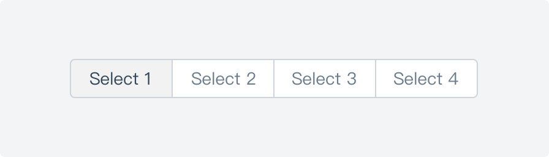
一般用于小版块内，或与基本样式、卡片样式搭配使用。用于卡片内的选项切换，经常和其它组件结合使用，让用户快速切换对应内容。
竖状样式
用于分类较多的选项，可以不限制分类数量，具备更好的扩展性。
步骤条（Steps）
步骤条是引导用户按照流程完成任务的导航条，可以帮助用户对操作流程长度和步骤有个预期，并且知道自己当前在哪个步骤，同时也可以对用户的任务完成度有明确的度量。当任务复杂或者存在先后关系时，将其分解成一系列步骤。
横向流程步骤条
步骤多于 2 步时使用，但建议不超过 5 步，每阶段文字长度保持在 12 个字符以内。
竖向流程步骤条
一般居页面左侧，悬浮固定，可追加多行文字描述，适合较多步骤或步骤数动态变化时使用，例如：时间步骤跟踪描述。
当有大量内容需要展现时进行分页加载处理，分页器可以让用户清楚的知道自己所要浏览的内容有多少、已经浏览了多少、还剩余多少。
标准样式
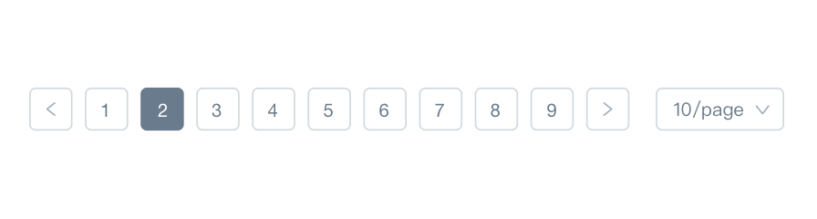
当页数超过 5 页时，可以提供快速跳转页面的功能。当信息条目较多的时候，可以允许用户自定义每页的行数，以提高用户查看和检索信息的效率和灵活性，常与表格、卡片搭配使用。
迷你样式
一般用于卡片或者浮层。
简易样式
一般用于卡片或者统计类表格展示，在 10 页之内。
Ant Design / data-entry
数据录入
数据录入是获取对象信息的重要交互方式，用户会频繁的增加、修改或删除信息。多种多样的文本录入和选择录入方式帮助用户更加清晰和高效的完成这项体验。设计者应当注意这几点：
- 为初级用户／偶尔访问的用户提供简单易懂的文案作为「标签（Label） 」；为领域专家提供专业术语作为「标签（Label） 」。当需要用户提供敏感信息时，通过「暗提示」来说明系统为什么要这么做，例如：需要获取身份证号码、手机号码时；
- 让用户能在上下文中获取信息，帮助他完成输入。使用「良好的默认值」、「结构化的格式」、「暗提示」、「输入提醒」等方式，避免让用户在空白中猜测输入。
文本录入
输入框为用户提供了编辑文本的控件，是录入数据最基础和常见的方式。
文本框（Input）
输入较少的字符总数，使用单行的输入形式。
注：可以对一些文本（如数字和网址）运用特别的样式。详见 输入框（Input）。
文本域（Textarea）
录入长篇幅的单一的文本使用多行的文本区域。
提示与帮助
为提升数据录入效率，通常可以在输入框内增加暗提示以帮助提醒用户。
注：输入框通常与标签（label）搭配使用，标签（label）默认放于输入区域的左侧，当文案过长或英文环境下也可放于输入区域的上方，但在同系统中需保持统一。
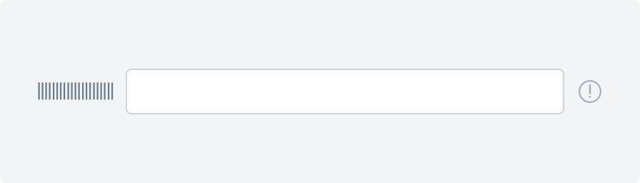
当说明文案较长时，你可以使用一个「信息」图标或者提示工具。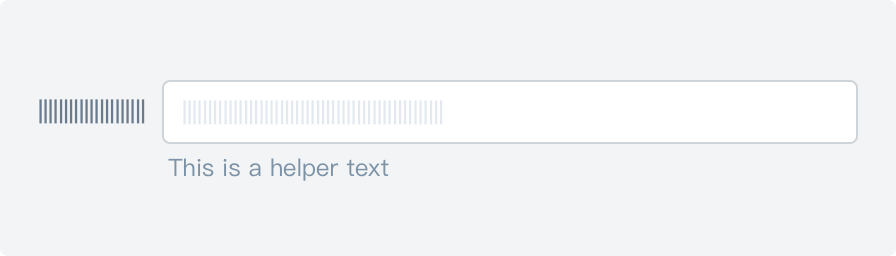
对于那些短的输入提醒（短于一句），你可以将其放置在输入框的下方。搜索（Search）
搜索可以让用户在巨大的信息池中缩小目标范围，并快速获取需要的信息。
选择录入
让用户在一个预定的范围中进行选择。
单选框（Radio Button）
单选按钮允许用户从多个选项中选择一个选项。Radio 所有选项默认可见，方便用户在比较中选择，因此选项不宜过多。
注：单选框（Radio Button）一定多于 2 个，一般少于 5 个。
复选框（Checkbox）
复选框用于在一组可选项中进行多项选择时。
注：
1. 复选框（Checkbox）一般用于状态标记，需要和提交操作配合；
2. 单个复选框可以表示两种状态之间的切换。
开关（Switch）
用于切换单个选项的状态。「开关」的内联标签应该显示清楚，例如：禁用/启用，不允许/允许等。
错误示范
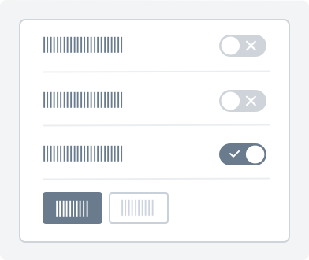
切换「开关」结果会立即生效，无需与操作按钮搭配使用。注：当用户切换「开关」按钮将直接触发状态改变。
选择列表（Dropdown）
选择列表（通常称为下拉菜单）允许用户从列表中选择一个选项或多个选项，为用户在选项的数量上提供了更多的灵活性。
注：
1. 当选项多于 5 项时使用；
2. 列表选项按照逻辑排序，并尽量让内容显示完整。
滑块选择（Slider）
滑块选择可以在连续或间断的区间内，通过滑动锚点来选择一个合适的数值。这种交互特性使得它在设置诸如音量，亮度，色彩饱和度等需要反映强度等级的选项时是一种极好的选择。
注：在不要求精准数值的场景下用户使用「连续滑块」可得到更灵活便捷的操作；在用户需要精确数值时，可与「数字输入框」搭配使用。
穿梭框（Transfer）
穿梭框用直观的方式在两栏中移动元素，完成选择行为。
日期选择器（DatePicker）
日期选择器为用户提供了一种可视化的方式去浏览和选择一个日期或者日期范围。
文件上传（Upload）
上传是将本地的相应信息(包含本地和云储存)通过网页或者上传工具发布到远程服务器上的过程。
简单点击上传
一般用于单个上传且不需要预览效果的文件上传，点击按钮弹出文件选择框。
显示缩略图上传
一般用于图片文件上传，用户可以上传图片并在列表中显示缩略图。当上传照片数到达限制后，上传按钮消失。
拖拽上传
把文件拖入指定区域，完成上传，同样支持点击上传。
注：文件上传需要提供明确的文件大小和文件格式，例如：请选择大小不超过 5M 的文本文件（支持 PDF.ZIP.EXL），上传时需要有明确的进度提示。
Ant Design / data-display
数据展示
合适的数据展示方式可以帮助用户快速地定位和浏览数据，以及更高效得协同工作。在设计时有以下几点需要注意：
- 依据信息的重要等级、操作频率和关联程度来编排展示的顺序。
- 注意极端情况下的引导。如数据信息过长，内容为空的初始化状态等。
表格（Table）
表格被公认为是展现数据最为清晰、高效的形式之一。它常和排序、搜索、筛选、分页等其他界面元素一起协同，适用于信息的收集和展示、数据的分析和归纳整理、以及操作结构化数据。它结构简单，分隔归纳明确，使信息之间更易于对比，大大提升了用户对信息的接收效率和理解程度。
注：
1. 表格中的时间、状态、操作栏需保持词语完整不过行。
2. 当单元格数据为空时，可使用 - 来表示暂无数据。
折叠面板（Collapse）
折叠面板通过对信息的分组和收纳，指引用户递进式的获取信息，使界面保持整洁的同时增加空间的有效利用率。
这类组件在导航中大量使用，同时也适合冗长的、无规则的内容管理。
注：若折叠内容彼此之间关联度较低时，可使用更为节省空间的『手风琴』模式——『手风琴』是一种特殊的折叠面板，只允许单项内容区域展开。
卡片（Card）
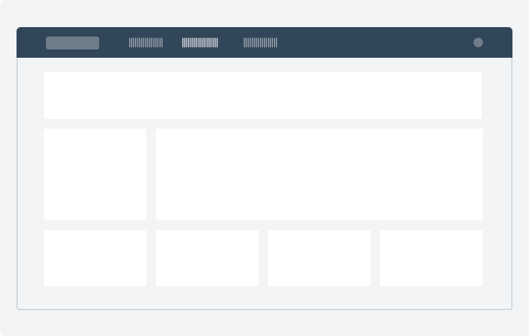
如页面内容加载过慢时，可采用『预加载』或『分步获取』的方式来缓解用户在等待时间中的焦虑感。卡片是一种承载信息的容器，对可承载的内容类型无过多限制，它让一类信息集中化，增强区块感的同时更易于操作；卡片通常以网格或矩阵的方式排列，传达相互之间的层级关系。适合较为轻量级和个性化较强的信息区块展示。
注：
1. 卡片通常根据栅格进行排列，建议一行最多不超过四个
2. 在有限的卡片空间内需注意信息之间的间距，若信息过长可做截断处理。例如『Ant Design 适用于中台…』
走马灯（Carousel）
作为一组平级内容的并列展示模式，常用于图片或卡片轮播，可由用户主动触发或者系统自动轮播。适合用于官网首页、产品介绍页等展示型区块。
注：
1. 轮播的数量不宜过多以免造成用户厌烦，控制在 3~5 个之间为最佳
2. 建议在设计上提供暗示，让用户对轮播的数量和方向保持清晰的认知
树形控件（Tree）
『树形控件』通过逐级大纲的形式来展现信息的层级关系，高效且具有极佳的视觉可视性，使得整体信息框架一目了然。
用户可同时浏览与处理多个树状层级的内容。适用于任何需要通过层级组织的信息场景，如文件夹、组织架构、生物分类、国家地区等等。
时间轴（Timeline）
垂直展示的时间流信息，一般按照时间倒叙记录事件，追踪用户当下以及过去做了什么。
每一条信息以时间为主轴，内容可涵盖主题、类型、相关的附加内容等等。适用于包括事件、任务、日历标注以及其他相关的数据展示。
Ant Design / data-format
数据格式
规范数据表达，保证直观准确一致地理解数据。
数值用来表示计量大小，可单独出现或搭配数字符号进行使用。
| 符号格式 | 如何使用及何时使用 | 例子 | | -------- | ---------------------------- | --------- | | 千分位 | 默认使用千分位帮助用户阅读。 | 123,220 | | 计量单位 | 计量单位默认用小写字母。 | 123,220kg | | 百分比 | 比例问题等。 | 12.32% | | 正斜杠 | 用分数的形式表示事项进展。 | 12/30 |
位置排列：便于用户直观而又准确地读取数据，要做到一眼观定、简洁明了。在表格中，诸如金额、数量等数值分布排列时，通常采用“右对齐”方式，既方便用户快捷读取数据，还可以使用户进行纵向数据对比。
不推荐示例
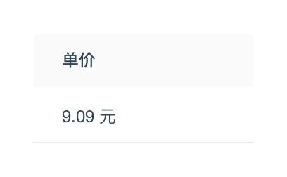
单位统一放在表头上，表格里不带单位，金额默认右对齐计量单位：在表格中，计量单位默认放在表头，并默认右对齐。
小写金额： 规范格式为「货币符号+数字」的格式，例如“CNY1,123.00"。 货币符号：表示货币种类的符号代码（货币符号表），分为字母和字符两种：
| 货币符号 | 如何使用及何时使用 | 例子 | | -------- | ------------------------------------------------------------ | --------- | | 字符 | 以人民币为例，金额前带货币单位标志¥ | ¥123.00 | | 字母 | 以人民币为例，推荐使用 CNY，CNY 为国际上通用的货币代码。 | CNY123.00 |
不推荐示例
金额数字到「元」为止的，在「元」之后，应写「整」字，在「角」之后可以不写「整」字。金额数字有「分」的，「分」后面不写「整」字。大写金额： 一般用于银行、公司或个人的重要结算凭证和各种交易票据，需要使用大写数字以确保数据无法涂改，规范格式为「货币名称+金额数字」。
不推荐示例
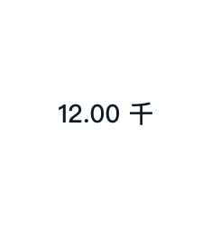
“千”不能以单位的形式展示。大额计量： 如果一个数值很大，那么数值中的“万”“亿”单位可采用汉字。
针对时间精确度要求较高的用户，强调信息发布的精确时间点，有回顾过去内容并通过绝对时间用来检索信息的诉求。
日期格式： 可用如下标准化计法：
| 格式 | 如何使用及何时使用 | 例子 | | --- | --- | --- | | 年、月、日 | 中国默认使用 yyyy-mm-dd 格式。（其它国家参考链接）。 | 2019-12-08 | | 专用名词 | 含有月日的专用名词采用阿拉伯数字表示时，应采用间隔号 · 将月、日分开，并在数字前后加引号。 | “6·1” 儿童节 | | 日期范围 | 在日期或时间范围之间显示一个波浪号 （前后需要空格）。 | 2018-12-08 ～ 2019-12-07 |
时间格式：默认使用二十四小时制：
| 时间制 | 如何使用及何时使用 | 例子 | | ------------ | --------------------------------- | ------------------------ | | 二十四小时制 | 二十四小时时间格式 HH:mm:ss 。 | 14:08:00 | | 十二小时制 | 十二小时时间格式 h:mm:ss 。 | 2:08:00 PM \| 2:08:00 AM |
标准格式：日期与时间连在一起时，两者之间用「空格」隔开，如“2019-12-08 06:00:00”。
时间的精确度对于用户并不十分重要，重要的是信息的即时性。在中后台中，相对时间一般用于消息、通知类功能，用户往往更关注于书面形式的时间单位，而不必去往前推算出发布的具体时间点。
| 时间 | 展示形式 | | ----------------- | ----------------------------------------------------- | | 1 分钟以内的时间 | 刚刚 | | 1 小时以内的时间 | N 分钟前 | | 24 小时以内的时间 | N 小时前 | | 24 小时以外的时间 | 用 mm-dd HH:mm 的形式表示，即 12-08 08:00 | | 超过一年的时间 | 用 yyyy-mm-dd HH:mm 的形式表示，即 2019-12-08 08:00 |
数据脱敏是指对某些敏感信息通过脱敏规则进行数据变形，实现敏感隐私数据的可靠保护。此处给出的脱敏规则为通用产品规范，遇到数据安全性较强的业务场景，可根据业务场景自行调整。
一般用于金额、时间等特别重要敏感的信息，需要对所有数字进行脱敏。数据用一个 *** 代替。
一般用于需要部分信息进行识别的状况，只需要对部分信息进行脱敏处理，但数字真实位数保留。数据脱敏部分用 * 代替。
| 脱敏类型 | 如何使用 | 例子 | | --- | --- | --- | | 姓名 | 两个字的姓名：显示第一个字符，后面的隐藏为 *。 | 仲\* | | | 三个字及三个字以上的姓名：显示第一个字符和最后一个字符，中间字符为 *。 | 仲\*妮<br />仲\*\*妮 | | 手机号码 | 保留手机号码前 3 位与后 4 位。 | 186 \*\*\*\* 1402 | | 身份证号码 | 公民身份号码由六位地址码，八位出生日期码，三位顺序码和一位校验码组成。脱敏规则分为高、中、低级：<br />高级：保留前一位与后一位，其余 * 表示，仅能识别该人属于哪个地区。<br />中级：保留前三位与后三位，其余 * 表示，仅能识别该人的省市与是男是女。<br />低级：保留前六位与后四位，其余 * 表示，仅能识别该人的省市区与是男是女。 | 6\*\*\*\*\*\*\*\*\*\*\*\*\*2<br />213\*\*\*\*\*\*\*\*\*\*\*203<br />212912\*\*\*\*\*\*2233 | | 联系地址 | 保留省市区，后面的用 * 表述。 | 浙江省杭州市 西湖区 \***\*\*\*\*** | | 邮箱 | 保留邮箱主机名与前三位字符，其余 * 表示。 | 123\***\*\*\*\*\*\*@163.com | | 银行卡号码 | 银行卡号码由发卡行标识代码（六到十二位不等），个人账号标识（六到十二位不等），一位校验码组成。脱敏规则分为高、中、低级：<br />高级**：保留后四位，其余 * 表示，仅能识别部份个人账号标识。<br />中级：保留前六位与后四位，其余 * 表示，仅能识别发卡行与小部份个人账号标识。<br />低级：保留前四位与后六位，其余 * 表示。仅能识别发卡行与大部份个人账号标识。 | \***\*\*\*\*\*\*\*1208<br />620121\*\***1208<br />620121\*\*\*\*111208 |
无数据用 -- 表述。
数据加载用「骨架屏」表示。
Ant Design / copywriting
文案
在界面中，我们需要通过对话的方式与用户产生共鸣。精准、清晰的语言会更容易让用户理解，合适的语气更容易让用户建立信任感。因此在界面设计时，文案也应当被重视。 在使用和书写文案时有以下几点需要注意：
- 从用户角度出发
- 表述一致
- 重要的信息放在显著位置
- 专业、精准、完整
- 精简、友好、正面
语言
在界面中，文案是我们与用户沟通的基础，语言文字的表述也需要精心推敲，仔细设计。清晰、准确、简洁的文案设计能够让界面拥有更好的可用性，同时让用户体验更加友好。
明确表述立足点
错误示范
侧重在「我们」为用户提供了什么，而不是以用户视角的关注点为中心。在表述内容时，关注点应该是用户和他们能用你的产品做什么，而不是你和你的产品在为他们做什么，所以内容表述的立足点很重要。
既然以用户为中心，文案就应该尽量以用户为主体来写作。
注：当用户向后台反馈问题、提出建议或申诉时，使用「我们」是合理的语境，例如「我们将会审核你的申诉」。
精简语句
省略无用词汇，不重复用户已知事实；在绝大多数交互场景下，都无需界面描述出全部的细节。
尽量提供简短、易于快速获取的内容。
使用用户熟悉的语言
使用简单、直接、易于理解的词汇，让内容和指示更容易被用户接受和理解。
间接、暧昧模糊的说法，生僻和过于「文雅」的用词，会增加用户的认知负荷，所以应当尽量避免使用这类用户无法识别的词汇。
表述一致
错误示范
同一区块描述中出现了「受」和「被」两个不同的介词。- 描述同一个事物的词汇要保持统一；
- 上下文的语法、语种、语序要保持统一；
- 操作的名称和目标页面标题的名称保持一致。
重要的信息放在显著位置
正确示范
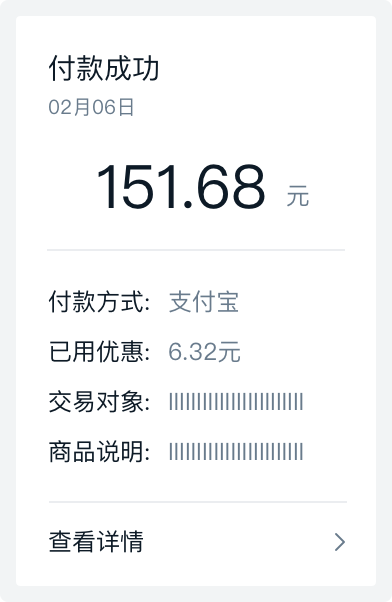
在有限的空间内将重要的信息放在最前面（或通过高亮、留白等方式突出重要信息）。错误示范
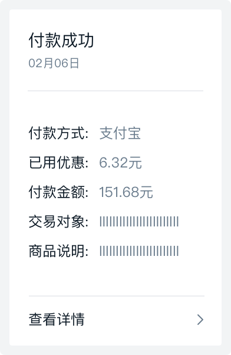
用户最关心的信息内容藏在段落中，不易搜寻。让用户第一眼看到最重要的内容，不用到段落中寻找。
注：如考虑安全性问题时，隐私信息也可调整为「点击后可见」的方式。
完整、直接地阐述信息
当我们希望用户进行一个操作时，要专注于用户能得到什么，以及用户的感受。在操作前引导告知用户操作的目的或重要性，能促进用户更愿意去执行。
正确示范
相对于「失败」，「无法完成」是更加客观的结果，更容易让用户在心理上接受。用户需要知道在出现问题的情况下如何进行下一步操作。报错是 UI 中常见的功能，它同样是用户体验中不可小视的组成部分。当用户填写的内容出错的时候，你的报错信息应当符合用户的认知，用易于理解的方式表述出来。
用词精准完整
错误示范
时间信息的描述词不是具体的「日」、「月」，容易让用户产生困扰。通用基本用词要规范，不要写错字，词语表达要完整。
专业用语要精准，并是所属行业认可通用用词；时间的表述必须明确。
语气
语言定义的是内容，而情绪和气氛更多地是通过语气来表达，并且同样的内容面对不同的用户我们可以使用不同的语气来表达；例如，我们对应专业的运维人员和小白用户应有不同的表达方式。
拉近彼此的距离
错误示范
建议不要使用「您」，太过客气，让用户感觉有些疏远。直接使用「你」、「我」来和用户对话，与用户建立亲密感。避免使用「您」，让用户感觉太过疏远。
错误示范
同时出现了称谓「我」和「你」，用户会感到迷惑，不清楚到底指代对象是谁。注：不要在同一个句式中混用「你」和「我」，交互中指代混乱会让用户相当纠结。
友好、尊重用户
错误示范
「不能」、「不要」、「请勿」都给人命令或强迫的感觉。多给用户支持与鼓励，不要命令和强迫用户。
如果你想留住你的用户，当出错的时候就不要责怪用户。专注于解决问题，而不是指责。
表述不应过于极端
不要使用过于绝对的表述，这样会让用户觉得不适。
大小写和标点符号
英文名词大小写规范
产品名称全称，首字母大写。产品名称缩写需要全部大写，如：ESC、SLB 等；
注：整个单词都大写不利于阅读和识别，应尽量避免这种用法。
正确使用专有名词的大小写规范。
全英文的标题，标签，菜单项等等都要遵循英文句式中首字母大写的规范。
统计数据使用阿拉伯数字
这也是常见问题，用户对于数字的感知速度更快，使用数字而非文字表述会更加有效。
省略不必要的标点
为了帮助用户更加高效地扫视文本内容，可以省略不必要的断句点。
以下元素单独出现时可以省略标点：
- 标签
- 标题
- 输入框下的提示
- 悬停文本中的提示
- 表格中的句子
以下元素单独出现时需要加上标点：
谨慎使用感叹号
感叹号会让文案显得过于激动，容易让气氛变得过于紧张。
注：当向用户表达问候或祝贺时，使用「！」是合理的语境，例如「欢迎回到社区！」。
基本标点规范
正确地使用标点符号会让句子看起来更清晰和具有可读性。
具体使用请参考 1995 年中国标准出版社出版的《标点符号用法》，右图为重点列出的在设计中需要注意的部分。
- 指导用户采取你希望他们采取的行动。
- 帮助用户避免犯错。
常规按钮，用于非主要动作。如果不确定选择哪种按钮，次按钮永远是最安全的选择。
突出“完成”、“推荐”类操作；一个按钮区最多使用一个主按钮。
弱化的按钮，采用更轻量的按钮样式，可用于需大面积展示按钮场景，例如表格组件中的操作列。
图标提供视觉线索，避免逐字阅读按钮文案，更高效地使用界面。
- 需要在较小的空间内展示尽量多的按钮。
- 使用纯图标按钮必须有 Tooltip 提示按钮含义。
用于对按钮含义补充解释，提高按钮识别效率。
常规按钮类型呈现出不同的强调程度，使用者可以据此变化出合适的按钮类型：
正确示范
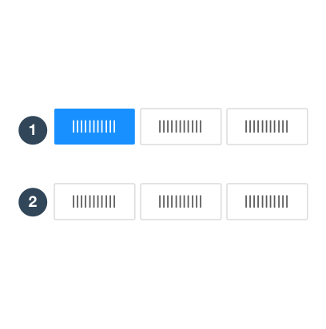
1、强调一个主要操作；<br/>2、操作无主次，次按钮是最安全的选择。错误示范
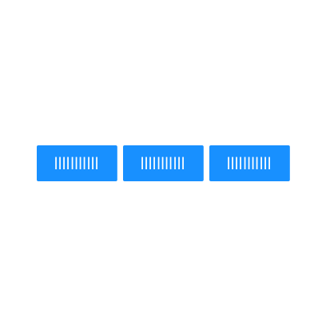
不要在一个按钮区放置超过一个主按钮。正确示范
1、按照主次展示全部操作。<br/>2、将次要操作收纳至右侧下拉按钮中。用于引导用户在一个区域中添加内容。
用户的主要意图是删除，通过红色警示该操作存在风险。
当系统不推荐用户执行删除操作时，可将取消按钮设置为主按钮。
警示用户该操作存在风险。
置于复杂或较深的背景中，避免按钮突兀地破坏背景的整体性。该场景下可灵活定制样式。
经常独立出现，行动号召按钮就像是电脑在对用户大声说“跟我来吧”，有点命令用户点击的意味，通常出现于 landing page 或者 一些引导性场景。最大可以将按钮放宽到与父区域等宽。一个屏幕空间中，建议只有一个行动号召按钮。
按钮区是用于放置按钮的区域，一个按钮区内可以有多个按钮。
按钮区跟随受控内容。将按钮区放置于用户浏览路径中，便于被用户发现。
工具栏中的按钮区，靠右放置。控制工具栏控制的内容范围。
- Header：主题的标题和摘要信息内容区的导航等
- Body：具体内容
- Footer：主题的补充信息和工具栏等
将按钮区放置在不同的区域，有不同的含义：见右图。
也存在一些特殊情况，将“完成”主题类的动作放在 Header 区。例如，编辑器中为了最大化编辑空间，将“完成”类动作放到了右上角。
为避免页脚工具栏滥用，我们不推荐使用页脚工具栏，仅建议以下两种场景使用：
- 1）对象详情页，「推进」对象的进展，例如审批流「通过」「驳回」。
- 2）异常复杂的表单页，表单的内容复杂到需要切分为多张卡片。
推荐操作是阅读的起点，折叠内容始终在最右侧。
如何确定按钮顺序？
- 对话习惯：按钮放置顺序类似于电脑和用户的对话，优先询问用户可能需要执行的操作，或你希望用户执行的操作，最后向用户提供存在风险的操作。
- 方向性含义：例如，具有返回意义的按钮，应该放在左侧，暗示其方向是回到之前，例如上一步。
错误示范
连在一起的按钮组在外观上易与 Toggle Button 切换按钮混淆。多个按钮形成一组时，将按钮排列在一起即可。
工具栏中的操作类型很多，我们会倾向于将变化较少的内容位置固化。以表格工具栏举例，排列逻辑如下：
- 业务逻辑：「推进」进程的操作。例如：编辑、新建、发布、保存、取消、撤回等；
- 视图控制：控制内容展示的形式。例如：全屏、表格密度、放大缩小、布局控制等；
- 其他：刷新、分享、设置等；
- 溢出：被折叠的操作，若进行响应式设计，从右往左折叠至溢出操作。
当需要布置的按钮数量过多，可以把相关的动作组成一组，并采用相似的视觉设计。当某一个按钮是首要动作时仍可使用主按钮强调。
按主次折叠部分按钮：
平铺每个按钮：优先推荐通过间距来区隔分组，也可以使用分割线来区隔视觉相似的按钮组。
文案需清楚传达用户按下按钮时系统将执行的操作。
- 必须使用动词。（下拉按钮除外）
- 与语境紧密关联，用语简练。
Ant Design 组件中默认使用 “确定 / 取消”文案 ，但你仍然可以通过以下方式优化按钮文案：
发布、登录、注册
你确定要删除它吗？删除 / 取消
Ant Design / data-list
数据列表
设计目标
列表类型
表格 Table
强调浏览性。矩阵布局，趋向于展示复杂数据，数据按照矩阵布局对齐，方便横纵浏览数据，研究数据之间的关系。特别当用户受益于更多的数据外露，而无需进入该对象详情时，使用表格。
列表 List
兼顾浏览性与展示性。垂直排列，趋向于展示对象的基础概述，有层次地展示内容，适合快速扫读。特别当展示空间存在限制，如较小的弹窗、侧栏、下拉面板等容器中，使用列表。
卡片列表 Card list
强调展示性。网格布局无特定浏览顺序，每个对象拥有更平等的展示机会，网格布局在页面中更具吸引力，适合突出对象时使用。
操作行为
搜寻数据
选择适合的搜寻组件。
1）明确用户主要的搜寻模式。
- 已知项探索：从可言语描述的已知项开始搜寻。
- 探索性查询：对需求确定但范围宽泛的目标进行搜寻。
2）搜寻频次越高对效率的要求越高。
3）与开发做好沟通，了解系统性能， 选择合适的组件。
查询
按照预设的条件，选择多个查询条件后一次性提交获取查询。
筛选
用户调整筛选项，结果即随之调整。
搜索
更智能的查找，输入关键词一次性在多种数据属性中查询后，展示结果。
分页
默认使用分页加载，用于减少用户等待。应缓存用户在原列表中的浏览位置，并标记列表中已浏览项，当用户返回上级页面是回到原浏览位置。
分页器
默认推荐使用。使用时，当页面内容不足一页时，不展示分页器。
同页加载
当用户常常能够在列表靠前位置找到所需条目，且无定位特定列表项的需求时可以考虑使用这种模式，如动态、邮件。
查看全部
当需跳转页面查看完整列表时使用。
导航至详情
默认点击标题导航至详情，可以从以下几个角度判断如何打开详情：
- 自然交互的角度，同页展开列表更自然，需注意展开的内容区高度不要超过一屏；
- 详情的信息量大小角度，如果信息展示超过一屏，使用展开的方式不便于用户操作，此时使用抽屉展开更好；
- 详情需要被单独分享给他人，或复杂的沉浸式任务，跳转独立页更合适；
- 每条详情中都可能有用户感兴趣的内容，以方便切换的导航，快速查看和处理不同的项目，可以使用双栏展示。
批量操作
当用户勾选条目后，触发批量操作模式，列表工具栏呼出批量操作工具条。
新建
右上角新建按钮
点击触发新建表单弹窗、抽屉、页面等，完成创建后新创建的内容出现在列表的第一条，并短暂地高亮展示。
虚线新建按钮
点击新建，在按钮位置出现对象编辑区，完成新建后即在该位置展示该新建对象。虚线新建按钮位置放在列表首或尾。
删除
直接删除
删除后，允许用户撤销。
二次确认
点击删除操作时，需要二次确认。
安全校验
破坏性操作需高安全级别验证确认操作。
列表工具栏
在较小的空间中集成列表所需的常用功能，非常推荐使用。
布局
列表布局通常从上往下平铺，按照以下顺序排列。其中独占式区域提供了一个扩展空间，用于解决无法集成于工具栏中的复杂数据搜寻、数据统计类内容。
空状态
当列表无数据或无搜索结果时，应展示空状态。
Ant Design / proximity
亲密性
如果信息之间关联性越高，它们之间的距离就应该越接近，也越像一个视觉单元；反之，则它们的距离就应该越远，也越像多个视觉单元。亲密性的根本目的是实现组织性，让用户对页面结构和信息层次一目了然。
纵向间距关系
在 Ant Design 中，这三种规格分别为：8px（小号间距）、16px（中号间距）、24px（大号间距）。
通过「小号间距」、「中号间距」、「大号间距」这三种规格来划分信息层次结构。
通过增加「分割线」来拉开层次。
在这三种规格不适用的情况下，可以通过加减「基础间距」的倍数，或者增加元素来拉开信息层次。
注：在 Ant Design 中，y = 8 + 8 * n。其中，n >= 0，y 是纵向间距，8 是「基础间距」。
横向间距关系
为了适用不同尺寸的屏幕，在横向采用栅格布局来排布组件，从而保证布局的灵活性。
在一个组件内部，元素的横向间距也应该有所不同。
正如「格式塔学派」中的连续律（Law of Continuity）所描述的，在知觉过程中人们往往倾向于使知觉对象的直线继续成为直线，使曲线继续成为曲线。在界面设计中，将元素进行对齐，既符合用户的认知特性，也能引导视觉流向，让用户更流畅地接收信息。
格式塔学派（德语：Gestalttheorie）：是心理学重要流派之一，兴起于 20 世纪初的德国，又称为完形心理学；主张人脑的运作原理是整体的，「整体不同于其部件的总和」。——摘自「维基百科」
文案类对齐
不推荐示例
标题和正文使用了两个视觉起点，不推荐该种对齐方式，除非刻意强调两者区别。如果页面的字段或段落较短、较散时，需要确定一个统一的视觉起点。
表单类对齐
冒号对齐（右对齐）能让内容锁定在一定范围内，让用户眼球顺着冒号的视觉流，就能找到所有填写项，从而提高填写效率。
数字类对齐
为了快速对比数值大小，建议所有数值取相同有效位数，并且右对齐。
对比是增加视觉效果最有效方法之一，同时也能在不同元素之间建立一种有组织的层次结构，让用户快速识别关键信息。
注：要实现有效的对比，对比就必须强烈，切不可畏畏缩缩。
主次关系对比
为了让用户能在操作上（类似表单、弹出框等场景）快速做出判断， 来突出其中一项相对更重要或者更高频的操作。
注意：突出的方法，不局限于强化重点项，也可以是弱化其他项。
「通过」和「驳回」都使用次按钮，系统保持中立。
在一些需要用户慎重决策的场景中，系统应该保持中立，不能替用户或者诱导用户做出判断。
总分关系对比
通过调整排版、字体、大小等方式来突出层次感，区分总分关系，使得页面更具张力和节奏感。
状态关系对比
用不同颜色点，来表明不同状态。
鼠标悬停时，该项和其他项呈现出明显不同的视觉效果，响应用户操作。
通过改变颜色、增加辅助形状等方法来实现状态关系的对比，以便用户更好的区分信息。
常见类型有「静态对比」、「动态对比」。
Ant Design / repetition
重复
相同的元素在整个界面中不断重复，不仅可以有效降低用户的学习成本，也可以帮助用户识别出这些元素之间的关联性。
重复元素
重复元素可以是一条粗线、一种线框，某种相同的颜色、设计要素、设计风格，某种格式、空间关系等。
正如 Alan Cooper 所言：「需要在哪里输出，就要允许在哪里输入」。这就是直接操作的原理。例如：不要为了编辑内容而打开另一个页面，应该直接在上下文中实现编辑。
页内编辑
状态一：普通的浏览模式，不区分可编辑行和不可编辑行；<br>状态二：鼠标悬停时，「指针」变为「手型」，编辑区域底色变黄，出现「Tooltips」提示单击编辑；<br>状态三：鼠标点击后，出现「输入框」、「确定」、「取消」表单元素，同时光标定位在「输入框」中。
单字段行内编辑
当「易读性」远比「易编辑性」重要时，可以使用「单击编辑」。
状态一：在可编辑行附近出现文字链/图标；<br>状态二：鼠标点击「编辑」后，出现「输入框」、「确定」、「取消」表单元素，同时光标定位在「输入框」中。
当「易读性」为主，同时又要突出操作行的「易编辑性」时，可使用「文字链/图标编辑」。
编辑模式在不破坏整体性的前提下，可扩大空间，以便放下「输入框」等表单元素；其中，在 Table 中进行编辑模式切换时，需要保证每列的不跳动。
多字段行内编辑
注：在「多字段行内编辑」的情况下，显示的内容和编辑时所需的字段会存在比较大的差异，所以更需要「巧用过渡」原则中的「解释刚刚发生了什么」来消除这种视觉影响。
利用拖放
状态一：鼠标悬停该行时，出现可移动的「图标」；<br>状态二：鼠标悬停在该「图标」时，指针变为「手型」，点击即可进行拖动；<br>状态三：拖动到可放置区块，出现蓝色描边，告知用户该区块可放置该对象。
拖放列表
只能限制在一个维度（上/下或者左/右）进行拖放。
拖放图片/文件
能在这个页面解决的问题，就不要去其它页面解决，因为任何页面刷新和跳转都会引起变化盲视（Change Blindness），导致用户心流（Flow）被打断。频繁的页面刷新和跳转，就像在看戏时，演员说完一行台词就安排一次谢幕一样。
变化盲视（Change Blindness）：指视觉场景中的某些变化并未被观察者注意到的心理现象。产生这种现象的原因包括场景中的障碍物，眼球运动、地点的变化，或者是缺乏注意力等。——摘自《维基百科》
心流（Flow）：也有别名以化境 (Zone) 表示，亦有人翻译为神驰状态，定义是一种将个人精神力完全投注在某种活动上的感觉；心流产生时同时会有高度的兴奋及充实感。——摘自《维基百科》
覆盖层
二次确认覆盖层：避免滥用 Modal 进行二次确认，应该勇敢的让用户去尝试，给用户机会「撤销」即可。推荐示例
用户点击「删除」后，直接操作；出现 Message 告知用户操作成功，并提供用户「撤销」的按钮；用户进行下一个操作或者 1 分钟内不进行任何操作， Message 消失，用户无法再「撤销」。推荐示例
特例：在执行某些无法「撤销」的操作时，可以点击「删除」后，出现 Popconfirm 进行二次确认，在当前页面完成任务。不推荐示例
滥用 Modal 进行二次确认，就像「狼来了」一样，既打断用户心流（无法将上下文带到弹出框中），也无法避免失误的发生。通过「点击」图标查看更多详情信息。
输入覆盖层：在覆盖层上，让用户直接进行少量字段的输入。鼠标「点击」图标触发；鼠标「点击」悬浮层以外的其他区块后，直接保存输入结果并退出。
嵌入层
列表嵌入层：在列表中，显示某条列表项的详情信息，保持上下文不中断。
标签页：将多个平级的信息进行整理和分类了，一次只显示一组信息。
虚拟页面
在交互过程中，「覆盖层」可以在当前页面上方显示附加内容和交互链接；「嵌入层」可以在页面内部实现同样效果；而「虚拟页面」不局限机械时代的「页面」，可以利用信息时代的特点构建一种新型「页面」。
流程处理
长期以来，Web 实现流程的方式就是把每个步骤放在一个单独的页面上。虽然这种做法是分解问题最简单的方式，但并不是最佳解决方案。对于某些「流程处理」而言，让用户始终待在同一个页面上则更有必要。
渐进式展现：基于用户的操作/某种特定规则，渐进式展现不同的操作选项。
配置程序：通过提供一系列的配置项，帮助用户完成任务或者产品组装。
弹出框覆盖层：虽然弹出框的出现会打断用户的心流，但是有时候在弹出框中使用「步骤条」来管理复杂流程也是可行的。
Ant Design / lightweight
简化交互
根据费茨法则（Fitts's Law），用户鼠标移动距离越短、对象相对目标越大，用户越容易操作。通过运用上下文工具（即：放在内容中的操作工具），使内容和操作融合，从而简化交互。
费茨法则 ：到达目标的时间是到达目标的距离与目标大小的函数，具体： 其中：1. D 为设备当前位置和目标位置的距离；2. W 为目标的大小。距离越长，所用时间越长；目标越大，所用时间越短。
实时可见工具
如果某个操作非常重要，就应该把它放在界面中，并实时可见。状态一：在文案中出现一个相对明显的点击区域；<br>状态二：鼠标悬停时，鼠标「指针」变为「手型」，底色发生变化，邀请用户点击。<br>状态三：鼠标点击后，和未点击前有明显的区分。
悬停即现工具
如果某个操作不那么重要，或者使用「实时可见工具」过于啰嗦会影响用户阅读时，可以在悬停在该对象上时展示操作项。鼠标悬停时，出现操作项。
开关显示工具
如果某些操作只需要在特定模式时显示，可以通过开关来实现。用户点击「修改」后，Table 中「文本」变成「输入框」，开启编辑功能。
可视区域 ≠ 可点击区域
在使用 Table 时，文字链的点击范围受到文字长短影响，可以设置整个单元格为热区，以便用户触发。当悬浮在 ID 所在的文字链单元格时，鼠标「指针」随即变为「手型」，单击即可跳转。
当需要增强按钮的响应性时，可以通过增加用户点击热区的范围，而不是增大按钮形状，来增强响应性，又不降低美感。注：在移动端尤其适用。鼠标移入按钮附近，即可激活 Hover 状态。
Ant Design / invitation
提供邀请
很多富交互模式（例如：「拖放」、「行内编辑」、「上下文工具」）都有一个共同问题，就是缺少易发现性。所以「提供邀请」是成功完成人机交互的关键所在。
邀请就是引导用户进入下一个交互层次的提醒和暗示，通常包括意符（例如：实时的提示信息）和可供性，以表明在下一个界面可以做什么。当可供性中可感知的部分（Perceived Affordance）表现为意符时，人机交互的过程往往更加自然、顺畅。
意符（Signifiers）：一种额外的提示，告诉用户可以采取什么行为，以及应该怎么操作；必须是可感知（例如：视觉、听觉、触觉等）。——摘自《设计心理学 1 》
可供性（Affordance）：也被翻译成「示能」，由 James J. Gibson 提出，定义为物品的特性与决定物品用途的主体能力之间的关系；其中部分可感知（此部分定义为 Perceived Affordance），部分不可感知。——摘自《设计心理学 1 》
静态邀请
指通过可视化技术在页面上提供引导交互的邀请。
引导操作邀请：一般以静态说明形式出现在页面上，不过它们在视觉上也可以表现出多种不同样式。常见类型：「文本邀请」、「白板式邀请」、「未完成邀请」。
在用户首次登录时出现少量「探索点」，当用户点击「我知道了」，能快速切换到下一个探索点。
漫游探索邀请：是向用户介绍新功能的好方法，尤其是对于那些设计优良的界面。但是它不是「创口贴」，仅通过它不能解决界面交互的真正问题。
注：保持漫游过程简单，让用户容易退出和重新启动；保持内容简明扼要，与功能密切相关。
动态邀请
指以响应用户在特定位置执行特定操作的方式，提供特定的邀请。
鼠标「悬停」整个卡片时，可被点击部分变为蓝色的「文字链」。
鼠标「悬停」时，出现「选择此模板」的按钮。
悬停邀请：在鼠标悬停期间提供邀请。
用户点击「赞」后，同时系统分析（既然用户喜欢这篇文章，那么可能对这一类文章都有兴趣）并提供开启「精打细算」的邀请。
推论邀请：用于交互期间，合理推断用户可能产生的需求。
在 Modal 中会出现前后切换的箭头。
更多内容邀请：用于邀请用户查看更多内容。
Ant Design / transition
巧用过渡
人脑灰质（Gray Matter）会对动态的事物（例如：移动、形变、色变等）保持敏感。在界面中，适当地加入一些过渡效果，能让界面保持生动，同时也能增强用户和界面的沟通。
- Adding: 新加入的信息元素应被告知如何使用，从页面转变的信息元素需被重新识别。
- Receding: 与当前页无关的信息元素应采用适当方式移除。
- Normal: 指那些从转场开始到结束都没有发生变化的信息元素。
在视图变化时保持上下文
滑入与滑出：可以有效构建虚拟空间。
传送带：可极大地扩展虚拟空间。
折叠窗口：在视图切换时，有助于保持上下文，同时也能拓展虚拟空间。
解释刚刚发生了什么
新增一条对象时，该行「高亮」告知用户这是新增项；几秒后「高亮」消失，以免过度干扰用户。
对象增加：在列表/表格中，新增了一个对象。
对象删除：在列表/表格中，删除了一个对象。
状态一：用户更改了「详情」中的值；<br>状态二：用户点击「保存」后，详情所在的网格出现「黄底」，表明该对象发生了更改；<br>状态三：底色持续几秒后，恢复正常。
对象更改：在列表/表格中，更改了一个对象。
对象呼出：点击页面中元素，呼出一个新对象。
改善感知性能
当无法有效提升「实际性能」时，可以考虑适当转移用户的注意力，来缩短某项操作的感知时间，改善感知性能。
自然运动
参见 Ant Motion 动画语言。
Ant Design / reaction
即时反应
「提供邀请」的强大体现在 交互之前 给出反馈，解决易发现性问题；「巧用过渡」的有用体现在它能够在 交互期间 为用户提供视觉反馈；「即时反应」的重要性体现在 交互之后 立即给出反馈。
就像「牛顿第三定律」所描述作用力和反作用一样，用户进行了操作或者内部数据发生了变化，系统就应该立即有一个对应的反馈，同时输入量级越大、重要性越高，那么反馈量级越大、重要性越高。
虽然反馈太多（准确的说，错误的反馈太多）是一个问题，但是反馈太少甚至没有反馈的系统，则让人感觉迟钝和笨拙，用户体验更差。
牛顿第三定律 ：当两个物体互相作用时，彼此施加于对方的力，其大小相等、方向相反。——摘自《维基百科》
查询模式
用户所查询的关键词，只会在「话题」、「问题」、「文章」这 3 种类目中出现。
用户所查询的关键词，其所属的类目数量不确定，可能 4 个，可能 5 个，可能更多。
自动完成：用户输入时，下拉列表会随着输入的关键词显示匹配项。根据查询结果分类的多少，可以分为「确定类目」、「不确定类目」两种类型。
用户输入一个搜索值，系统随即显示查询结果。
实时搜索：随着用户输入，实时显示搜索结果。「自动完成」、「实时建议」的近亲。
反馈模式
根据用户的输入，提供关于密码强度和有效性的实时反馈。
实时预览：在用户提交输入之前，让他先行了解系统将如何处理他的输入。
注：解决错误最好的办法，就是不让错误发生。而「实时预览」就是有效避免错误的好设计。
渐进式展现：在必要的时候提供必要的提示，而不是一股脑儿显示所有提示，导致界面混乱，增加认知负担。案例详见「足不出户／渐进式展现」。
进度指示：当一个操作需要一定时间完成时，就需要即时告知进度，保持与用户的沟通。常见的进度指示：「按钮加载」、「表格加载」、「富列表加载」、「页面加载」。可根据操作的量级和重要性，展示不同类型的进度指示。
点击刷新：告知用户有新内容，并提供按钮等工具帮助用户查看新内容。
新增的列表项「高亮」，持续几秒后恢复正常。
定时刷新：无需用户介入，定时展示新内容。